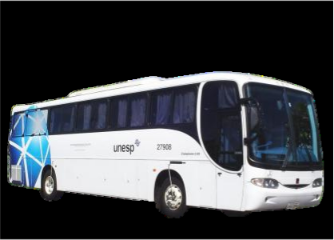

Nossa História
O caminho que nos uniu e a base de tudo que somos hoje.
Início da Associação dos Motoristas da Unesp (A.M.U.)
A construção de uma casa começa num sonho, vira projeto e com ajuda de muitos colaboradores vão se unindo os tijolos e assim a casa surge. A história da nossa união não foi diferente, ela nasceu em reuniões...
Para sempre contaremos com a união dos membros e colaboração muitos para as necessárias manutenções!
Assim, em analogia, surgiu nossa estimada e respeitada “Associação dos Motoristas da Unesp”, que, de um sonho antigo, virou um projeto e por iniciativa da FUNDUNESP (na época Fundunesp) que acolheu os motoristas, conversamos sobre unirmos em um encontro de classe, quando um assessor, Sergio Fernandes, veio até nosso grupo e chamou-nos para uma reunião com o Sr. Vagner José Oliva, que decidiu apoiar-nos no que for preciso inclusive com o primeiro patrocínio.
E, assim, começou nossa construção, cada um colocando tijolinhos na esperança da construção da Nossa Casa, a de todos os motoristas da UNESP.
Para mostrar, elencamos os motoristas que, por estarem nessa primeira reunião, se autodenominaram, naquele dia, como "Sócios Fundadores".
Sócios Fundadores
| Nome | Unidade |
|---|---|
| Adhemar | Guaratinguetá |
| Oscar S. Pereira | Prudente |
| Ademir | Araraquara |
| Carlos A. de Freitas | Araraquara |
| Edson | Rio Claro |
| Sérgio Lombardi | Bauru |
| Junior | Assis |
| José Sebastião | Franca |
| Roberto | São José dos Campos |
| Rubens | Ilha Solteira |
| Wladimir | Assis |
| Deglair | S. José do Rio Preto |
| Roberto | Araçatuba |
| Valdomiro | Araraquara |
| Nunes | Araraquara |
| Luis | Marília |
| Floriano | Araraquara |
| José Eduardo |